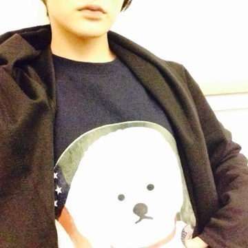

| 2015/04 02 Thu | とても濃い3月でし た_(:3」∠)_ |
気づいたら4月。
エイプリルフールも終わり、
街を歩いていると暖かい風と共に、
新米のキラキラ輝いた新しいスタートを切った方たちが歩いていて、
私も心機一転
しっかり気持ちを切り替えて頑張らないとなって思いますヽ(・∀・)ノ
皆さんに改めてお知らせします。
この度、約1年間続いたAKB48との兼任が解除になりました。
なので、
今年の総選挙には出馬出来ません。
これはきっと、
私がこの兼任期間で学んだことを、
乃木坂46の勝負の年である今しっかりと生かしていきなさい、
強くなりなさいって言っているんじゃないかなと思います。
兼任を選んで、チャレンジして私は本当に良かったなと思います。
自分の力を上げる事が出来たし、
でも自分の力だけではありません。
支えてくださった皆さんがいたから、
メンバー、スタッフさんがいたからです。
少しでも恩返ししたいっ！
頑張るぞ〜ヽ(・∀・)ノ
乃木坂46では、
全国握手会のミニライブ復活ヽ(・∀・)ノ
11枚目シングルに収録されている曲全部披露させてもらいました！
京都の皆さんの盛り上がりっぷりは凄かったヽ(・∀・)ノ
あらかじめ語られるロマンスを生駒ちゃんが持っているアイドル全部使ってやってみました。
あらロマ
是非盛り上がってねヽ(・∀・)ノ
25日、26日とAKB48
ヤングコンサートと、春の単独コンサートと、2日間参加しました！
凄く楽しかったヽ(・∀・)ノ
やっぱり、同じステージに立つと分かる先輩達の偉大さ。
早く私もそこに行きたい。
強く思いました。
握手会もありがとうございました！
兼任解除寂しいって皆さんが言って下さって。
AKBファンの方の心に少しでも私の存在があったのかなと思いました。
見てくれてありがとうございます！
映画、コープスパーティーの撮影もありました。
またこれは公開が近づいたら詳しくいろんな事をお話ししたいと思いますっ！
コープスパーティーのスタッフさん、共演者の皆さんに沢山助けてもらって、
初心者の生駒でしたが、なんとかクランクアップ出来ました！！
お芝居って凄く楽しいです！！
こんな私でも作品を作りたいって、
演じたいって思ってもいいのかなぁ。。
また機会が来る様に努力します！！
最近はOFFがあって、めちゃ充実した休みを送りました〜⭐️
リフレッシュ大事


お気に入りのトレーナー。
いぬ。
へばなっ☆彡
コメント(786)
2015/04/02 19:30